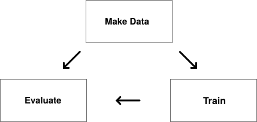
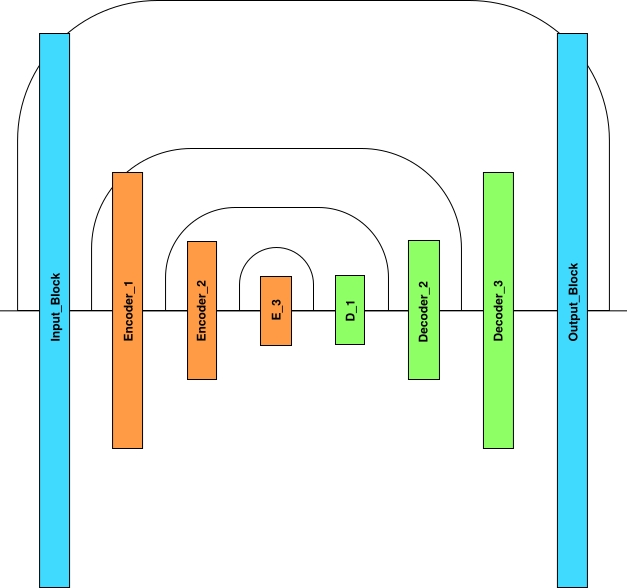
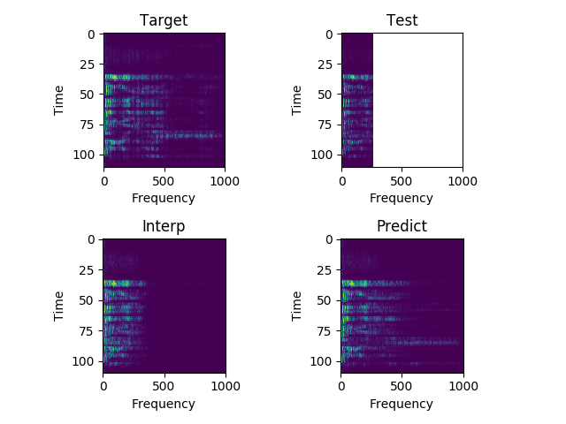
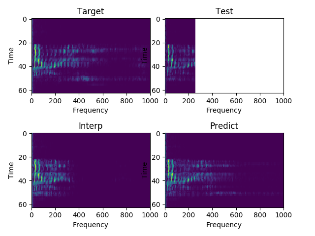
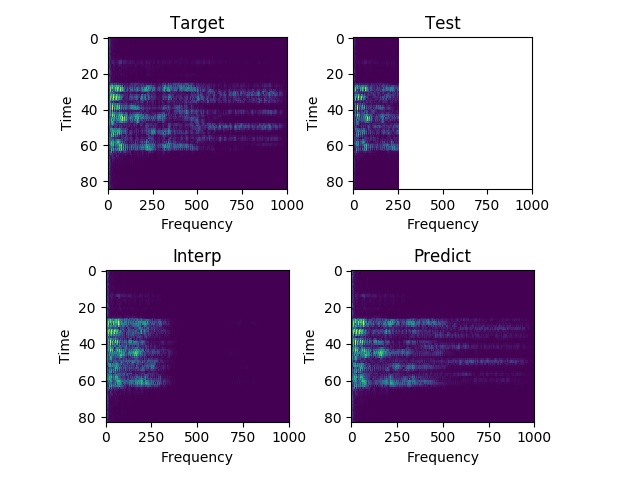
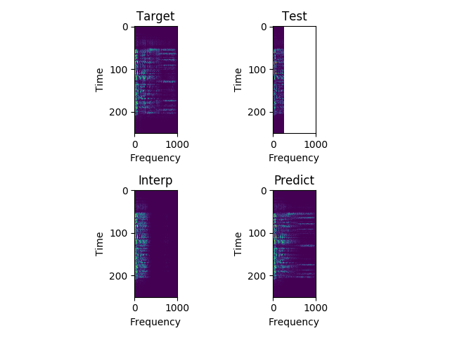
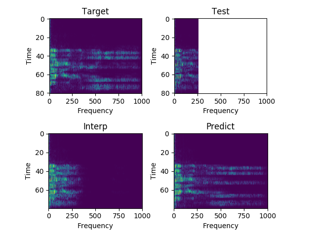

Machine Learning
Better Audio
Through AI
By Andrew Gundersen & Enrique Hernandez
Abstract
A neural network capable of upsampling low-resolution audio into wide-band, high-definition audio. Our bandwidth over the internet often fails to accommodate high definition VoIP conference calling. I improve upon this problem by utilizing machine learning techniques to recreate a high-quality audio signal from a small amount of low-quality data. The network is fully convolutional with three encoding and three decoding layers. After training on 40,000 audio files, the results are very noticeable. The network is able to generalize upsampling trends and reproduce a high-quality audio experience in real-time.
Motivation
With an increasing amount of our workforce operating remotely, and with a more global economy, we rely on VoIP more than ever to conference with our teams. However, the quality of VoIP varies heavily, especially when multiple people are linked into one call. We have all been on a conference call that where it’s hard to hear everyone clearly. Whether it’s because of loud background noice, or low reception, poor audio quality is frustrating and anti-productive.
Process

Creating a Data Generator
40,000 files from the Common Voice Dataset were used as a starting point for the dataset. The default sample rate on Common Voice is 48khz which is already high quality. Therefore, multiple copies of the dataset were made with sample rates of 16khz, 8khz, and 4khz, respectively. The files were shuffled and manually pruned for quality.
Next, a program was conceived to slice every file in the dataset into 10ms frames. The frames where then normalized between -1 and 1 to obtain a smoother training process. Then, a random subset of the data (usually around 0.4) was discarded. Arrays were made with ~8000 frames each, equaling one sample for training. This process was done for both the target and estimate datasets.
The estimate data goes though an additional step in order for it be the same dimension as the target audio. Naturally, a 4khz signal array will be a fourth of the length of a 16khz signal. Therefore, zeroes are inserted between the estimate data until the length is the same as the target length. This makes processing a lot easier on the neural network end.
The samples are converted into Numpy arrays and stored in an .h5 file for faster training. The file names doubled as data ID’s that indicated all the characteristics of the dataset.
This while process had its own dedicated repository called data. Its sole job was to fulfill data requests from the neural net program. Upon request, the repository would execute a Makefile that handled all of the sub-programs. It included a multitude of setting options, including number of files, sample rate, type of interpolation, etc. Therefore, the data creation was fully automated, allowing more time for real research.
Neural Net Design

There was a lot of experimenting before arriving at the final neural network design. The final design is a one-dimensional, fully-convolutional neural network with three encoding blocks and three decoding blocks. Each block consists of a relu activation, an IC layer (batch normalization + dropout), and finally a 1D convolution. The decoding blocks have an upsampling layer between the IC and the convolution. In order to avoid beginning the model with a relu, an “input encoder” layer precedes the first block, which simply is a one-dimensional convolution. Along the same lines, I included an “output convolution” block after the last upsampling block which consists of a relu, 1D convolution, and an upsampling layer.
The network also takes advantage of skip connections so that the decoding blocks can use information from the original signal in order to better reconstruct the upsampled signal. They are applied in a symmetrical fashion after and before each block (see picture). For instance, the second decoding block uses information from the second encoding block. All merging layers use a summation approach, except for the last one which utilizes a concatenation, because it simply links input data to output data. With these connections, the hope is that the model only has to learn the difference between good and bad audio, as opposed to everything about audio.
The number of filters used in each convolutional layer spanned from 128 to 512 depending on the depth of the block relative to the model. Blocks closer to the center of the model had 512 filters in their convolutions. The filter sizes followed a reverse trend by decreasing in amplitude towards the center. The intuition is that the model first deduces big trends in the data, then transitions to analyzing the fine-grain details.
Speaking more on intuition, a fully convolutional model was chosen because of its ability to generalize better. In fact, most of the design choices for the model had to do with increasing generalization and robustness. This is coming from a position that most upsampling could be done with a few fine-tuned rules or patterns that the neural network just needed to find. Therefore, network should not get overly hung-up on outlier data.
As you may have deduced by now, the network has a bottleneck shape relative to the data’s primary dimension. The primary dimension begins with a shape of [8000, 1]. As information flows through the model, the primary dimension halves through every block - by using a stride of two - until it reaches the center of the model. The process is then reversed through the decoding blocks to return at the input dimension. In order for the decoding blocks to do this, their convolutions have a stride of one, then an upsampling layer doubles the primary dimension.
Training the Model
The model was trained from 40,000 audio files, each one being about 5-10s. The training session itself lasted for 100 epochs with a batch size of 64. The optimizer was Atom with a standard learning rate of 3e-4. After the 100 epochs, small tweaks were made to the training stack in order to squeeze out an additional 1-2% of loss, such as increasing the batch size and decreasing the learning rate. The loss on a trained model is ~1e-5 (data was normalized between 1 and -1). Efforts to improve the model from there were not effective enough to warrant more training time. Overall, the samples I drew from the model are satisfactory.
Samples
Each sample consists of the target (HD audio ground truth), the estimate (low-quality audio), and the prediction (HD audio NN recreation) respectfully. Also, each sample is paired with their respective spectrograms for visualization purposes.
Sample 1:
"That money could have been coming to Scotland."

Sample 2:
"He didn't get out much."

Sample 3:
"Justice was not seen today."

Sample 4:
"She can scoop these things into three red bags and we can go meet her Wednesday at the train station."

Sample 5:
"This is a national crisis."

Conclusion
The results from this project demonstrate the viability of machine learning in audio enhancement. An implementation of this technology would allow callers to experience an HD audio experience even when their connection is slow. Also, there is room for improvement as I did not employ an ensemble of models nor used an even larger dataset. The GPU used for training was a GTX 1080i. Therefore, having access to more compute resources would have also improved the model’s generalization. If someone has the desire to implement this technology, they would have to write a kernel program that sits in-between the conference application (ie. Skype) and the sound card on the user’s computer.
References
C. Guangyong, C. Pengfei, S. Yujun, H. Chang-Yu, L. Benben, Z. Shengyu. Rethinking the Usage of Batch Normalization and Dropout in the Training of Deep Neural Networks. arXiv:1905.05928v1 [cs.LG] 15 May 2019.
J.-M. Valin, A Hybrid DSP/Deep Learning Approach to Real-Time Full-Band Speech Enhancement, International Workshop on Multimedia Signal Processing, 2018. (arXiv:1709.08243).
Se Rim Park, Jin Won Lee. A Fully Convolutional Neural Network for Speech Enhancement. arXiv:1609.07132v1 [cs.LG] 22 Sep 2016.
S. Wenzhe, J. Caballero, F. Husźar, J. Totz, A.P. Aitken, R. Bishop, D. Rueckert, W. Zehan. Real-Time Single Image and Video Super-Resolution Using an Efficient Sub-Pixel Convolutional Neural Network. arXiv.1609.05158 [cs.CV] 16 Sept 2016.
V. Kuleshov, S.Z. Enam, and S. Ermon. Audio Super-Resolution Using Neural Nets. arXiv:1708.00853v1 [cs.SD] 2 Aug 2017.